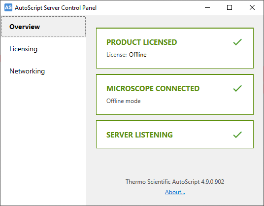
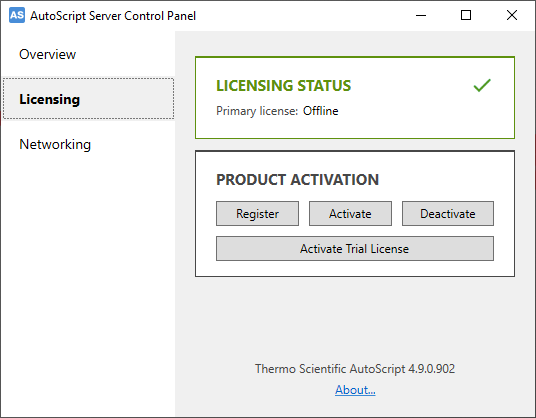
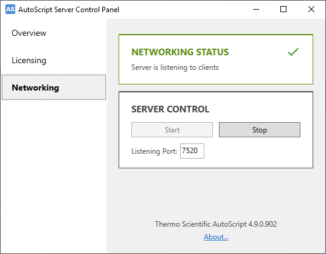

AutoScript server
The AutoScript server is a service running on the microscope computer, responsible for executing scripting
commands received over the TCP/IP network from Python scripts.
It is configured to start automatically with the operating system. Its status is indicated by an icon in the system tray,
displaying the letters "AS".
A blue icon signifies that the server is ready to accept scripting commands, while a gray icon indicates potential
issues such as a lack of proper licensing, inactive microscope server software, or a manually stopped AutoScript server.
The AutoScript Server Control Panel provides insights into the server's internal state.
You can open this panel by either double-clicking the "AS" icon or navigating to
Start > Thermo Scientific AutoScript > AutoScript Server.
On the Overview page, a summary of the server's state is displayed, featuring three sections marked with green check marks
under normal conditions. In the event of an error, a red cross mark appears along with an error description.


The Licensing page presents a list of active product licenses and tools for managing them.
To apply a license key, it must first be registered for use on the microscope computer by clicking the Register button
and entering the key. Subsequently, the key must be activated by pressing the Activate button,
which opens a popup window requiring user details. Activation data need to be submitted to the online licensing server,
which requires access to a computer connected to the internet, like a personal laptop.
Before uninstalling the product, the key should be deactivated using the Deactivate button.
Additionally, AutoScript can be activated for a 90-day trial period by clicking the Activate Trial License button.
For more detailed information on licensing procedures, refer to the AutoScript installation manual or
contact Thermo Fisher Scientific service team.
The Networking page allows configuration of the TCP/IP port on which the AutoScript server listens
for incoming scripting commands. While typically unnecessary to change the port under normal circumstances,
it can be useful in resolving conflicts with other software using the same TCP/IP port on the computer where the AutoScript
client is installed.

To change the port, first, stop the server by pressing Stop, enter the new port number,
and then resume the server by pressing Start.